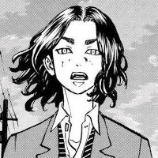
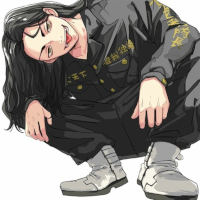
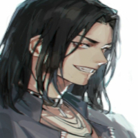

A primeira divisão da toman é a divisão de batalha, seus líderes são Baji e Chifuyu.
Keisuke Baji
Keisuke Baiji nasceu no dia 3 de novembro de 1990, Baji foi um dos fundadores da Toman e hoje em dia é o líder da primeira divisão. Baji era amigo de mickey desde criança e se metia em várias brigas com ele mesmo sua aparência na época sendo de um nerdsinho Baji sempre foi bom de briga.
Imagens de keisuke Baji



Músicas e videos sobre Keisuke Baji
Chifuyu Matsuno
Chifuyu Matsuno nasceu no dia 19 de dezembro de 1991 e é o vice-líder da primeira divisão da Tomam, Chifuyu aparece pela primeira vez apanhando de Baji, mas mesmo assim Chifuyu acredita que Baji não está traindo a gangue, pois ele conhece o Baji melhor do que qualquer um e consegue saber oque ele está pensando.